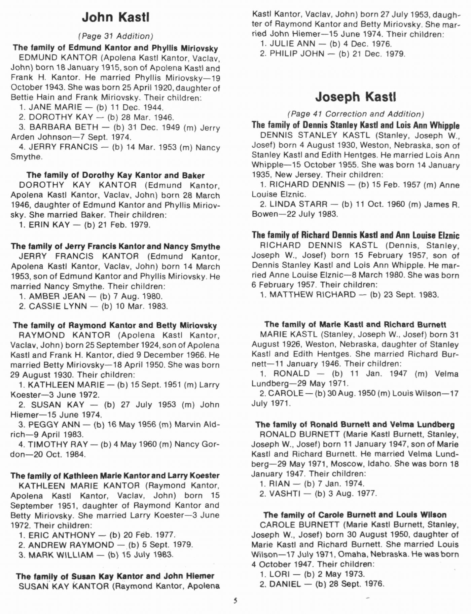

The book · Supplementary Section (1986)
Supplement page 5 John Kastl


Transcription
John Kastl
(Page 31 Addition)
The family of Edmund Kantor and Phyllis Miriovsky
EDMUND KANTOR (Apolena Kastl Kantor, Vaclav, John) born 18 January 1915, son of Apolena Kastl and Frank H. Kantor. He married Phyllis Miriovsky—19 October 1943. She was born 25 April 1920, daughter of Bettie Hain and Frank Miriovsky. Their children:
- JANE MARIE — (b) 11 Dec. 1944.
- DOROTHY KAY — (b) 28 Mar. 1946.
- BARBARA BETH — (b) 31 Dec. 1949 (m) Jerry Arden Johnson—7 Sept. 1974.
- JERRY FRANCIS — (b) 14 Mar. 1953 (m) Nancy Smythe.
The family of Dorothy Kay Kantor and Baker
DOROTHY KAY KANTOR (Edmund Kantor, Apolena Kastl Kantor, Vaclav, John) born 28 March 1946, daughter of Edmund Kantor and Phyllis Miriovsky. She married Baker. Their children:
- ERIN KAY — (b) 21 Feb. 1979.
The family of Jerry Francis Kantor and Nancy Smythe
JERRY FRANCIS KANTOR (Edmund Kantor, Apolena Kastl Kantor, Vaclav, John) born 14 March 1953, son of Edmund Kantor and Phyllis Miriovsky. He married Nancy Smythe. Their children:
- AMBER JEAN — (b) 7 Aug. 1980.
- CASSIE LYNN — (b) 10 Mar. 1983.
The family of Raymond Kantor and Betty Miriovsky
RAYMOND KANTOR (Apolena Kastl Kantor, Vaclav, John) born 25 September 1924, son of Apolena Kastl and Frank H. Kantor, died 9 December 1966. He married Betty Miriovsky—18 April 1950. She was born 29 August 1930. Their children:
- KATHLEEN MARIE — (b) 15 Sept. 1951 (m) Larry Koester—3 June 1972.
- SUSAN KAY — (b) 27 July 1953 (m) John Hiemer—15 June 1974.
- PEGGY ANN — (b) 16 May 1956 (m) Marvin Aldrich—9 April 1983.
- TIMOTHY RAY — (b) 4 May 1960 (m) Nancy Gordon—20 Oct. 1984.
The family of Kathleen Marie Kantor and Larry Koester
KATHLEEN MARIE KANTOR (Raymond Kantor, Apolena Kastl Kantor, Vaclav, John) born 15 September 1951, daughter of Raymond Kantor and Betty Miriovsky. She married Larry Koester—3 June 1972. Their children:
- ERIC ANTHONY — (b) 20 Feb. 1977.
- ANDREW RAYMOND — (b) 5 Sept. 1979.
- MARK WILLIAM — (b) 15 July 1983.
The family of Susan Kay Kantor and John Hiemer
SUSAN KAY KANTOR (Raymond Kantor, Apolena Kastl Kantor, Vaclav, John) born 27 July 1953, daughter of Raymond Kantor and Betty Miriovsky. She married John Hiemer—15 June 1974. Their children:
- JULIE ANN — (b) 4 Dec. 1976.
- PHILIP JOHN — (b) 21 Dec. 1979.
Joseph Kastl
(Page 41 Correction and Addition)
The family of Dennis Stanley Kastl and Lois Ann Whipple
DENNIS STANLEY KASTL (Stanley, Joseph W., Josef) born 4 August 1930, Weston, Nebraska, son of Stanley Kastl and Edith Hentges. He married Lois Ann Whipple—15 October 1955. She was born 14 January 1935, New Jersey. Their children:
- RICHARD DENNIS — (b) 15 Feb. 1957 (m) Anne Louise Elznic.
- LINDA STARR — (b) 11 Oct. 1960 (m) James R. Bowen—22 July 1983.
The family of Richard Dennis Kastl and Ann Louise Elznic
RICHARD DENNIS KASTL (Dennis, Stanley, Joseph W., Josef) born 15 February 1957, son of Dennis Stanley Kastl and Lois Ann Whipple. He married Anne Louise Elznic—8 March 1980. She was born 6 February 1957. Their children:
- MATTHEW RICHARD — (b) 23 Sept. 1983.
The family of Marie Kastl and Richard Burnett
MARIE KASTL (Stanley, Joseph W., Josef) born 31 August 1926, Weston, Nebraska, daughter of Stanley Kastl and Edith Hentges. She married Richard Burnett—11 January 1946. Their children:
- RONALD — (b) 11 Jan. 1947 (m) Velma Lundberg—29 May 1971.
- CAROLE — (b) 30 Aug. 1950 (m) Louis Wilson—17 July 1971.
The family of Ronald Burnett and Velma Lundberg
RONALD BURNETT (Marie Kastl Burnett, Stanley, Joseph W., Josef) born 11 January 1947, son of Marie Kastl and Richard Burnett. He married Velma Lundberg—29 May 1971, Moscow, Idaho. She was born 18 January 1947. Their children:
- RIAN — (b) 7 Jan. 1974.
- VASHTI — (b) 3 Aug. 1977.
The family of Carole Burnett and Louis Wilson
CAROLE BURNETT (Marie Kastl Burnett, Stanley, Joseph W., Josef) born 30 August 1950, daughter of Marie Kastl and Richard Burnett. She married Louis Wilson—17 July 1971, Omaha, Nebraska. He was born 4 October 1947. Their children:
- LORI — (b) 2 May 1973.
- DANIEL — (b) 28 Sept. 1976.
People from the line of descent on this page
- Joseph Kastl 1869–1953
- Marie Kastl b. 1926
- Dennis Stanley Kastl b. 1930
- Lois Ann Whipple b. 1935
- Linda Starr Kastl b. 1960
- Richard Dennis Kastl b. 1957
- Anne Louise Elznic b. 1957
- Matthew Richard Kastl b. 1983
Transcriber’s notes
Supplement page 5. The Susan Kay Kantor / John Hiemer entry begins at the foot of the left column and continues at the top of the right column; reading order preserved. The Carole Burnett / Louis Wilson child list (1. LORI, 2. DANIEL) continues on the next page with '3. DAVID'. Printed as-is: heading 'Dorothy Kay Kantor and Baker' (husband's given name not printed); heading 'Ann Louise Elznic' vs text 'Anne Louise Elznic'.